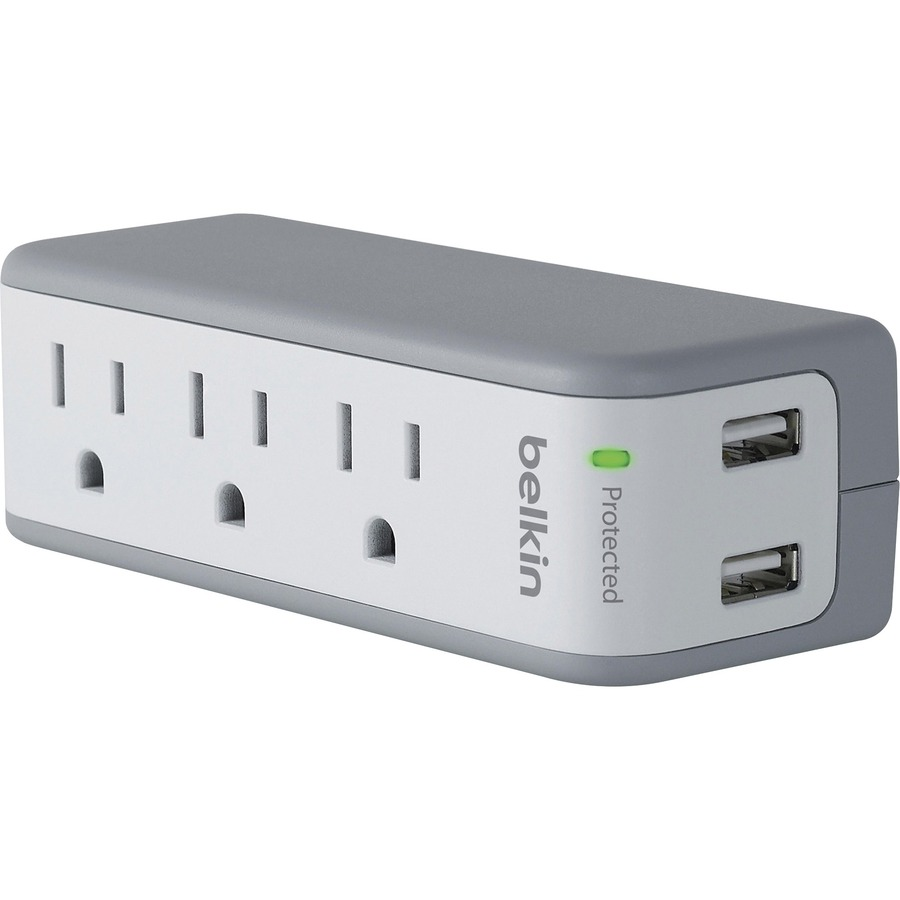
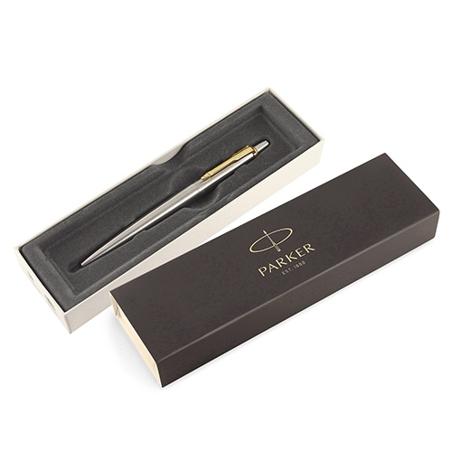
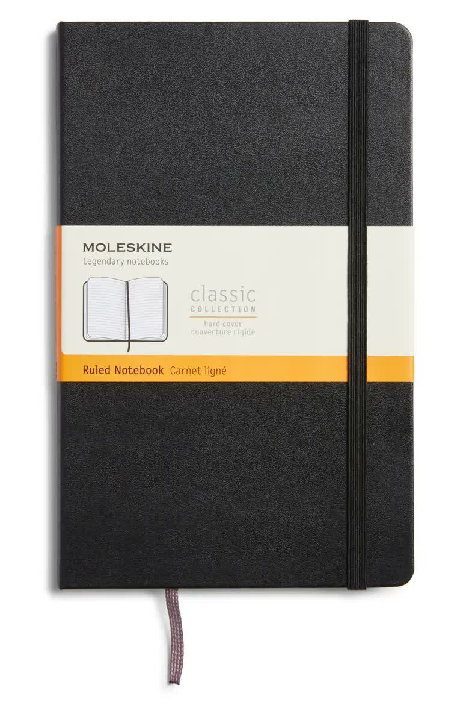
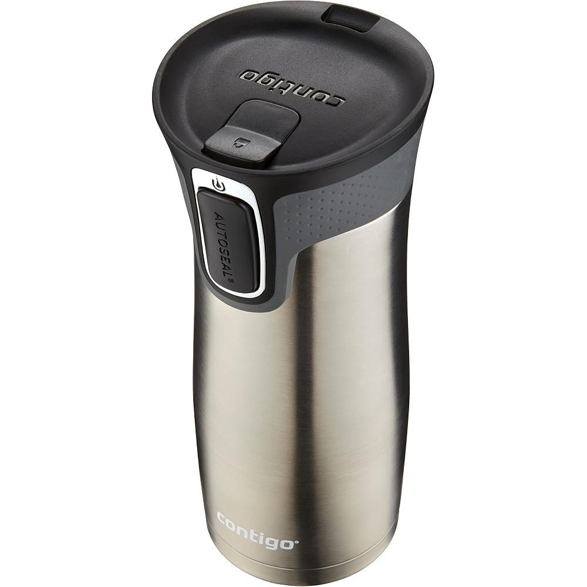
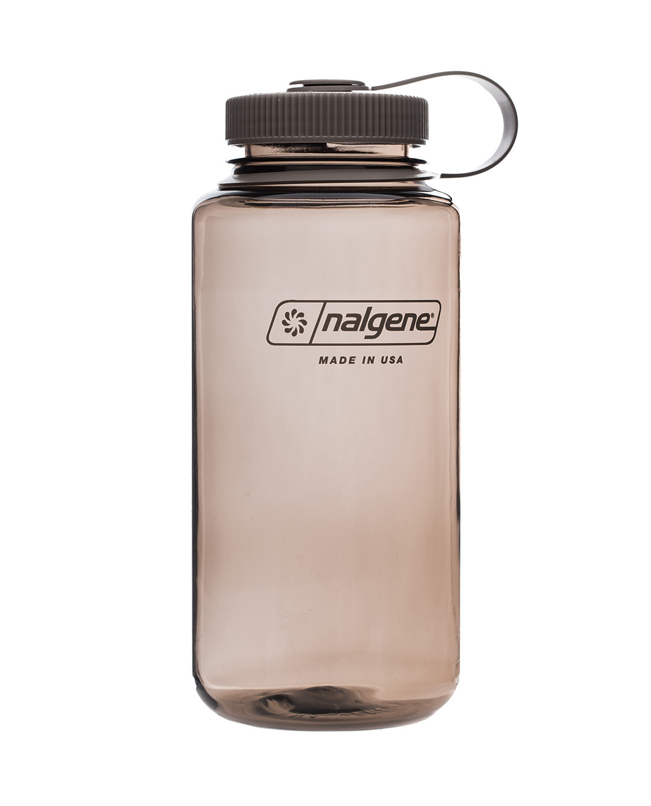
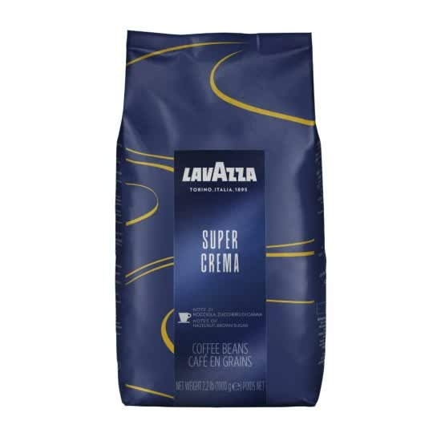
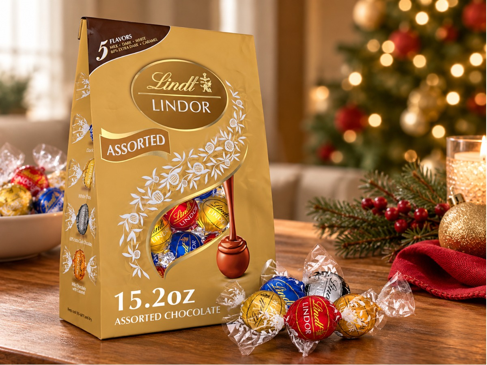
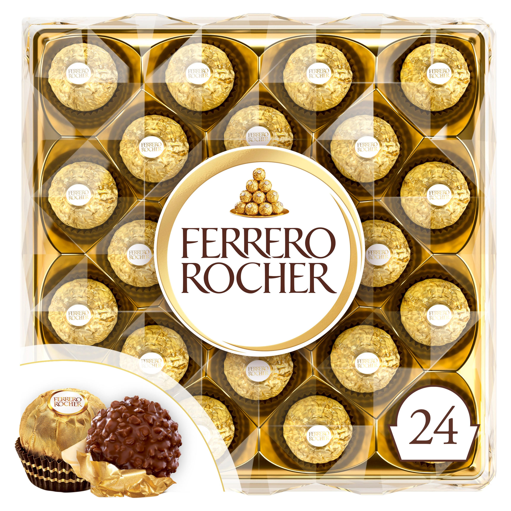
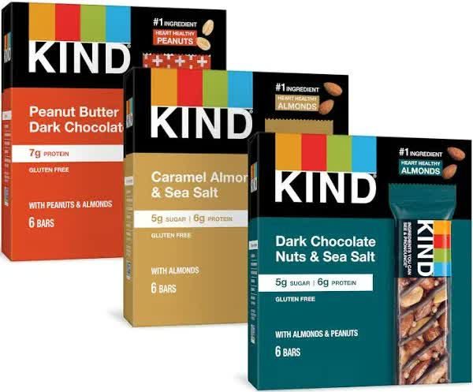
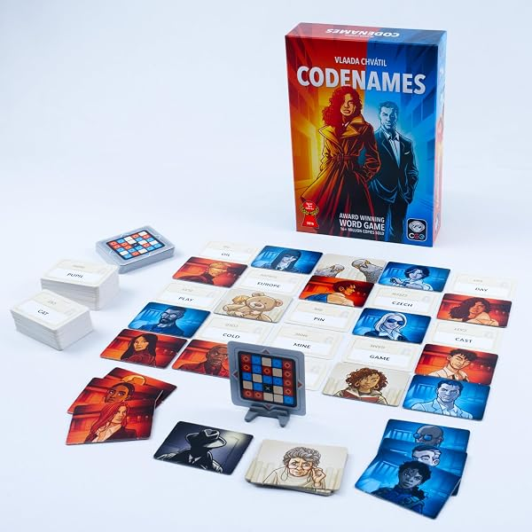

Best Gifts for Coworkers Under $25: 10 Office-Safe Picks
Coworker gifts are the easiest presents to get wrong. Too personal and it is awkward, too jokey and it lands wrong with someone you barely know, too cheap and it shows. The safe lane is narrower than people think — but it exists: useful things from brands everyone recognizes, food made to be shared, and small luxuries that feel thoughtful without pretending you know this person's home life. That is this list: ten under-$25 picks that survive the office party, the Secret Santa draw and the person whose name you learned last month.
A word on prices: we deliberately print none. Amazon prices move daily before Christmas, so a number printed in October would be a small lie by December. Every pick was chosen because its usual street price sits in the under-$25 range; the button on each pick shows the live price. Shopping for the rest of the list too? The teachers' guide under $25 and the teens' guide under $25 are built the same way.
How these picks were chosen
- The workplace-appropriate test. Nothing alcohol-branded, nothing scented or sized, nothing intimate, and no gag gifts — the white elephant guide owns that lane. Every pick here could be opened in front of the whole department.
- Recognizable brands only. Belkin, Parker, Moleskine, Contigo, Lavazza, Lindt, Ferrero, KIND — names the recipient already trusts, so the gift reads as generous instead of random.
- Shareable by design. Half the list is food and drink in individually wrapped portions, because the gift that stocks the break room makes the giver look good for weeks.
- Honest downsides. Each card lists real cons — the allergen in the box, the plug that will not fit, the part that is hand-wash only.
Desk upgrades they'll use every day

1. Belkin 3-Outlet Mini Surge Protector with USB — the desk power fix
Every office has the same geometry problem: one wall outlet, four things that need it.This pocket-size Belkin turns that outlet into three AC sockets plus two USB ports, with 540 joules of surge protection and a green "Protected" light so you know it is working. The plug rotates, which is how it fits behind a desk instead of jutting into it, and at this size it moonlights as a travel surge protector. The least sentimental gift on this list, and very possibly the most used.
- Pros: three outlets plus two USB ports from one socket, pocket-size; 540-joule surge protection with an indicator light; rotating plug fits the outlets furniture usually blocks.
- Cons: the two USB ports share 2.1 amps — fine for phones, slow for a hungry tablet; no USB-C, so newer laptops still travel with their own charger.
Best for: the coworker whose desk is a cable crime scene — and anyone who travels for work.
Check current price
2. Parker Jotter Stainless Steel with Gold Trim — the Secret Santa safety pick
The Jotter has been in production since 1954 and remains the pen other pens get compared to: a brushed stainless barrel, the signature arrow clip in a gold-tone finish, and a click mechanism so satisfying it should be sold separately. This version arrives in Parker's gift box with a blue-ink refill fitted — the presentation makes it look like a considered gift instead of a stationery-cupboard raid. It refills with standard Parker cartridges sold everywhere, so it is a pen for years, not a pen for a quarter.
- Pros: genuinely handsome in the gift box — looks well above its price; refillable for life with refills available anywhere; the stainless barrel shrugs off desk-drawer abuse.
- Cons: ships with a medium point only — fine-point writers will want a refill swap; the gold trim is a finish, not solid brass, and years of daily use will wear it at the edges.
Best for: the Secret Santa you barely know — this is the pick that cannot miss.
Check current price
3. Moleskine Classic Notebook, Large Ruled — the meeting upgrade
The black notebook everyone recognizes on sight: hard cover, 240 pages of ivory ruled paper, an elastic closure, a ribbon marker and an expandable pocket in the back for the receipts and cards that otherwise live in a coat pocket. The large size (5 × 8.25 inches) is the meeting size — big enough for a real page of notes, small enough for the bag, and the thread binding opens flat on the desk instead of fighting you.
- Pros: lays flat, closes clean, and the back pocket genuinely earns its place; ivory paper is easy on the eyes under office lighting; the design is a decade-proof classic.
- Cons: the paper is on the thinner side — fountain pens and heavy markers can bleed through; this listing is the ruled version, so dot-grid devotees need a different one.
Best for: the meeting note-taker, the list-maker, and the coworker still using a legal pad from 2019.
Check current priceThe commute pair

4. Contigo West Loop Travel Mug (16 oz) — the one that can't spill
The West Loop's party trick is the lid: press the button to drink, let go, and AUTOSEAL seals it shut automatically — which is why this is the mug people trust inside a laptop bag.Vacuum insulation keeps coffee hot for up to 5 hours and cold drinks cold for up to 12, the body is sized for standard car cup holders, and the whole thing works one-handed, because the other hand is always holding a door, a badge or a steering wheel.
- Pros: seals between every sip — a knocked-over mug is a non-event; properly one-handed, the way commuting actually works; lid is top-rack dishwasher safe and opens up for a real clean.
- Cons: the stainless body is hand-wash to protect the finish; you hold the button down while drinking, which takes a day to get used to.
Best for: the commuter whose coffee rides in the cup holder — or in the bag.
Check current price
5. Nalgene Sustain Water Bottle, 32 oz (Mocha) — the desk hydrator
The wide-mouth Nalgene is the bottle that outlives jobs. This Sustain version is molded from Tritan Renew — half recycled plastic — with the leak-proof screw cap, ounce markings up the side, and a mouth wide enough for ice cubes and an actual wash. It carries a lifetime guarantee, it is made in the USA, and the mocha colorway is the grown-up one: at home on a desk instead of a hiking trail.
- Pros: close to indestructible, with a lifetime guarantee behind it; wide mouth takes ice and cleans in seconds; measurement markings make the hydration-goal people unbearably smug.
- Cons: no insulation — ice water sweats onto the desk, so a coaster is part of the deal; the wide mouth can splash if you sip mid-stride, and it is too wide for some car cup holders.
Best for: the coworker with a daily water goal and a graveyard of lesser bottles.
Check current priceBreak-room shares & small luxuries

6. Lavazza Super Crema Whole Bean Coffee (2.2 lb) — the break-room hero move
Instead of one more thing for one desk, this restocks the whole break room: a 2.2-pound bag of Lavazza's best-known blend, 60% arabica and 40% robusta, roasted in Italy for notes of hazelnut and brown sugar and the thick crema the robusta is there for. It is a mild, creamy, low-bitterness profile — the rare serious coffee the whole office drinks without a debate — and it works in espresso machines, moka pots and, ground coarse, a drip machine.
- Pros: one bag keeps the break room in good coffee for weeks; smooth, crowd-pleasing profile instead of a roast-master's argument; real crema and a proper coffee aroma the pod machine cannot fake.
- Cons: it is whole bean — the office needs a grinder, or you are gifting homework; espresso-leaning roast can read light to committed dark-roast drinkers.
Best for: the office coffee person, or given to the whole team as the group gift.
Check current price
7. Lindt LINDOR Assorted Truffles (15.2 oz) — the candy-dish refill
Lindor is the truffle with the liquid-smooth center, and this 15.2-ounce bag is the assorted one: milk, white, dark, caramel milk and 60% extra dark, every piece individually wrapped.That wrapping is the office point — the bag pours straight into a desk candy dish, stays hygienic for weeks of visitors, and covers every chocolate preference in the row. As a gift it needs nothing added: the gold bag already looks like the holidays.
- Pros: five flavors means nobody's favorite is missing; individually wrapped, so sharing is built in rather than negotiated; Lindt's name does the gift-wrapping for you.
- Cons: melts above room temperature — hand it over in person, never leave it in a hot car; contains milk and soy, and the dark varieties are made on shared lines, so check the bag for severe allergies.
Best for: the desk-snacker whose candy dish the whole floor quietly depends on.
Check current price
8. Ferrero Rocher Gift Box (24 count) — the thank-you that presents itself
Twenty-four gold-wrapped hazelnut chocolates in the clear diamond box — whole hazelnut, creamy filling, crisp wafer, milk chocolate — in the packaging that has meant "a proper thank-you" for decades. No wrapping required; the box is the message. It is the right size for the person you owe: the team lead who absorbed the December chaos, the admin who actually runs the office. Individually wrapped, so it shares gracefully too.
- Pros: presentation-ready straight off the shelf; the most universally recognized "nice" chocolate there is; individually wrapped pieces share easily.
- Cons: hazelnut is a tree-nut allergen — the one pick here that is wrong for a nut-free office; the grand box is mostly presentation, at 10.6 ounces of chocolate.
Best for: the team lead, the office manager, and anyone you owe a real thank-you.
Check current price
9. KIND Bars Variety Pack (18 count) — stock the snack drawer
Eighteen full-size KIND bars in three flavors — Dark Chocolate Nuts & Sea Salt, Peanut Butter Dark Chocolate, and Caramel Almond & Sea Salt — packaged as three 6-bar boxes that split three ways. Nuts are the first ingredient, the bars run 6–7 grams of protein, they are gluten free, and each one is individually wrapped, so the box survives weeks in a desk drawer without going stale. The break-room gift for the office that runs on 3 p.m. snacks.
- Pros: three proven flavors — there is no dud in the box; individually wrapped and shelf-stable for the whole season; the three-box format splits across a team or stocks three drawers.
- Cons: peanuts, tree nuts, milk and soy — read the room on allergies before this becomes the shared snack; the dense, chewy texture is a love-it-or-leave-it thing.
Best for: the desk-snacker, the meeting survivor, and stocking the drawer before the holiday crunch.
Check current priceThe team gift

10. Codenames Board Game (2nd Edition) — buy it for the office, not a person
The word game that ate every game night: two teams, two spymasters, 25 codenames on the table, and one-word clues trying to connect them — hit your agents, dodge the assassin. This second edition refreshes the word list and the artwork and streamlines the rules so a new group is playing in five minutes; a round takes about fifteen, and it seats four to eight or more — the whole team. Gift it to the office kitchen shelf and it will be the lunch-break institution by January.
- Pros: the rare game non-gamers genuinely love — no trivia or dexterity required; fifteen-minute rounds fit a lunch break; scales from a small team to the whole department party.
- Cons: needs at least four players to shine (Duet covers two players); clue arguments get loud — a feature at the party, a hazard beside the quiet desks.
Best for: the whole team — the office party, the lunch crew, the manager who hosts.
Check current priceShopping for everyone else too?
The coworker is one line on the list. The rest of the season's guides are built the same way: gifts for teachers under $25, gifts for teens under $25, gifts for kids under $25, gifts under $25 for men, gifts under $25 for women, white elephant gifts under $25, self-care gifts under $30, and stocking stuffers under $15. Buying ahead for the big day instead? The Black Friday watchlist tracks which categories are worth holding out for until November 27.
Quick answers
How much should you spend on a coworker gift?
For most coworkers, the comfortable band is roughly $10 to $25 — enough to buy something genuinely good from a real brand, not so much that it turns into a statement. If your office runs an official Secret Santa, use its stated limit instead of this guide's; matching the group's number matters more than the gift itself. Spend at the lower end for acquaintances and the upper end for the person who covers your shifts.
What do you get a coworker you barely know?
Buy for the desk, not the person. A nicer pen, a good notebook, a travel mug or a box of well-known chocolates says "I thought about this" without pretending to know their tastes, hobbies or home life. Avoid anything scented, sized, alcoholic or joke-based — those are the categories that land wrong with a near-stranger. When in doubt, the Parker Jotter and the Ferrero Rocher box on this list are the two safest picks in the building.
Is food a safe coworker gift?
Mostly yes, with two cautions. First, allergies: nut-based gifts like Ferrero Rocher and KIND bars are wonderful for most of the office and a real hazard for a few people, so save them for someone whose allergies you know, or put them in the shared break room with the ingredients visible. Second, freshness and storage: chocolate melts in a warm mailroom, so hand it over in person or have it delivered to a home address. Individually wrapped items are the office-friendly format — they stay hygienic in a candy dish for weeks.
Should you buy a gift for your boss too?
A small one, yes — and a group gift is even better. Etiquette runs downhill: gifts flow from managers to reports more comfortably than the reverse, so an expensive solo gift for your boss can read as currying favor. A modest pick from this list given by the whole team (the Lavazza bag for the break room, the Codenames box for the office) thanks them without putting anyone in an awkward spot. Match whatever your team culture already does.
When should I order coworker gifts for Christmas?
Work backwards from the office party or the last day before the break, not from Christmas Day — most offices exchange a week or more early. Order by early December so the gift is in your desk drawer before the party date is even announced, and earlier for the brand-name picks, since the whole internet is buying the same pens, mugs and chocolates in the same two weeks. Food gifts keep best bought last and stored somewhere cool.